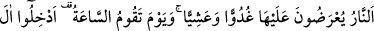
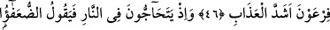
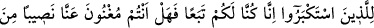
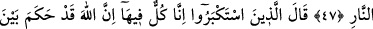
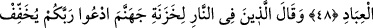
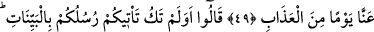
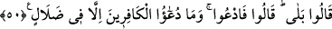

ONLAR
SABAH AKŞAM
O ATEŞE SOKULURLAR
46. Onlar sabah akşam o ateşe sokulurlar. Kıyametin kopacağı gün de: Firavun
ailesini azabın en çetinine sokun (denilecek)!
47. (Kâfirler) ateşin içinde birbirleriyle çekişirlerken zayıf olanlar, o büyüklük
taslayanlara: Biz size uymuştuk. Şimdi ateşin birazını bizden savabilir misiniz?
derler.
48. O büyüklük taslayanlar ise: Doğrusu hepimiz bunun içindeyiz. Şüphe yok ki
Allah kulları arasında vereceği hükmü verdi, derler.
49. Ateşte bulunanlar cehennem bekçilerine: Rabbinize duâ edin, bizden, bir gün
olsun azabı hafifletsin! diyecekler.
50. (Bekçiler:) Size peygamberleriniz açık açık deliller getirmediler mi? derler.
Onlar da: Getirdiler, cevabını verirler. (Bekçiler ise): O halde kendiniz yalvarın,
derler. Halbuki kâfirlerin yalvarması boşunadır.
“Onlar,” yâni Firavun ve adamları, “sabah akşam” yâni günün başında ve sonunda
“o ateşe sunulurlar.”
Sabah akşam ateşe sunulmalarının anlamı, ruhlarının ateşle yakılarak azâb
edilmesidir.
Burada sadece iki vaktin zikredilmesi, ya sadece bu vakitlerde azaba uğratıldıkları
içindir ya da bu iki vakit arasında azaba uğratıldıklarını göstermek içindir. Her ne ise,
Allah Teâlâ, onların durumunu çok iyi bilmektedir. İsterse bir başka azap çeşidiyle de
azâb eder, isterse onlara bir müddet nefes aldırır. Yahud da, “(Cennetliklerin) orada